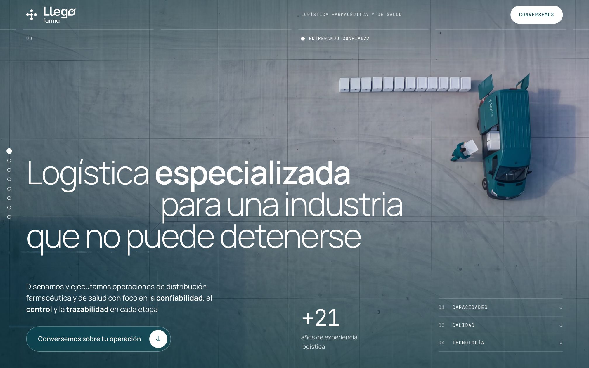
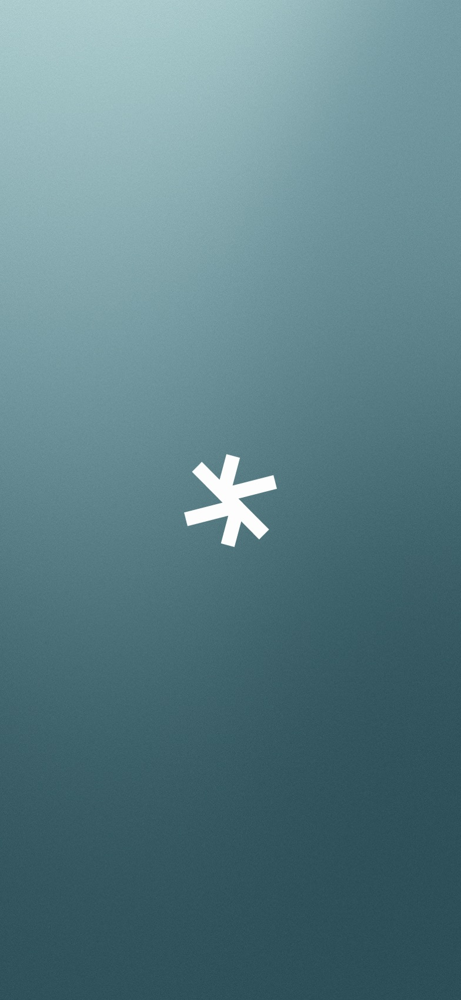

Marca · One page
2026 · Pronto en línea



Llegó Farma
Submarca de logística farmacéutica. Pitch ganado al diseñador de la marca madre.
Marca · Producto · Web
2025–26 · tapin.cl ↗

Tap In
De la cafetería del campus a la plataforma del colegio.
Investigación · Marca · Web app
2026 · Prototipo con acceso


Mend
Salud articular para Atención Primaria, de la investigación al producto.
Archivo(05)
Proyectos anteriores. Editorial, identidad y producto, de 2022 a 2025.